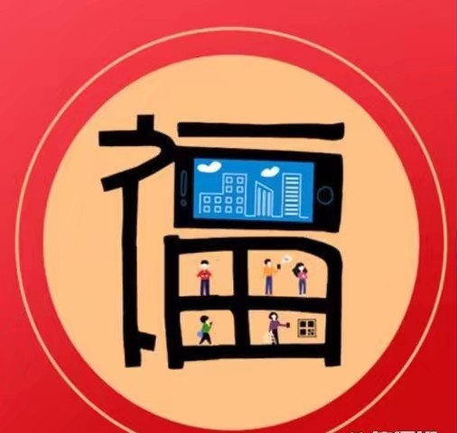
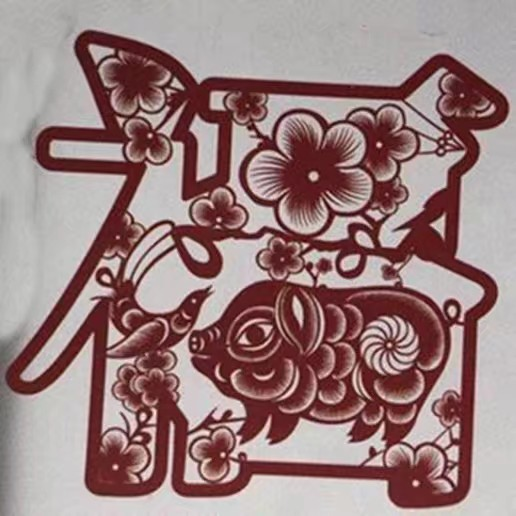
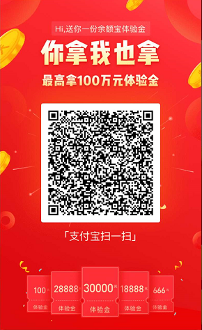

支付宝新年活动攻略
2019-01-26
一年一度的支付宝集五福又开始了，今年除了集福的方式略有调整，真正的福利其实也有所变化。同时，除了集福，支付宝还有几个红包活动，收益其实更大。下面上干货：
一、支付宝随机红包
打开支付宝首页搜
556818527
可领取随机红包，每日可领一次，领到的红包记得3天内花掉哦，有的小伙伴领20多块的红包，结果忘了花直接失效了，可惜。
一、集五福分5亿
支付宝首页—点击上图页面即可集福，活动持续到2月4日，2月4日22：18开奖。集齐五福的用户可瓜分5亿元现金。集福方式有以下几种：
小窍门: 可以把福图片发到其他手机上然后拿自己手机扫
1.AR扫一扫——扫福字即可，该方式每日最多得2张福。
2.进入蚂蚁森林“福气林”浇水得福卡，每日最多得2张福。
3.扫可口可乐定制福（下图）可额外得1张福卡，不中继续扫；且可随机获得支付宝现金红包、优酷VIP7天、8减2流量券。
4.扫移动福字（下图）可得1张福卡，不中继续扫；且可得1G移动流量。

5.KFC福字（下图）可得1张福卡或套餐优惠券，要多扫几次。

6.淘宝APP，注意是淘宝哦。搜“五福”—扫红色年货（红色的包装）可得1个福字或清空购物车机会，中福卡的几率也比较低，大家试试吧。
7.1月28日起，进入“答答星球”小程序答题随机获取福卡。
8.1月31日起，蚂蚁庄园领取“糖葫芦”喂给小鸡随机获取福卡。
9.朋友互赠福卡。
集福卡除了正常的红包，还有下面两个特殊福利：
✦✦今年没有万能福，但是有“花花卡”。所有集福卡的地方都有可能出现，有了花花卡可以在2月4日21:20参与抽大奖，最高48888元花呗红包。一共2019份。小编已经幸运的扫到了，嘿嘿嘿，大家加油！
♥♥今年的集五福最大的靓点就是每张福卡都有隐藏福利，抽到福卡后一定要刮奖，各种小福利数不过来，还有大奖哦：全年帮你还花呗、欧洲国家联赛观赛之旅、清空淘宝购物车、淘票票全年观影、蚂蚁森林带你去看树、春节到店付款15天免单、余额宝100万全年体验金等
二、支付宝点灯笼红包
支付宝APP—财富—活动页面“新春福气节节高”—完成任务即可得相应红包，完成6个任务点右侧小礼包还可得额外红包。每个人任务都不一样，任务基本都是开通自动转设置计划啥的，弄完得到红包建议立即手动终止计划（就是关闭自动设置），小编6个简单任务得了8块多。
四、江苏地区支付宝水电红包
【您有9.5折专享红包待领取！】#吱口令#长按复制此消息，打开支付宝一键开通，缴费无忧08sf2N27Yh
五、支付宝解绑10元红包
支付宝所有银行卡解绑，明天或者过两天，银行卡页面，或者卡包上面显示绑卡10元红包。回头可以再绑回来。
六、余额宝免费体验金
余额宝扫码得体验金几百块到100万不等，可免费享3天收益。长按识别下方二维码领取。

七、另一个余额宝免费体验金
另一个余额宝体验金活动，支付宝搜年年有余，鲤鱼跳龙门的活动，还能再领体验金，金额更大。